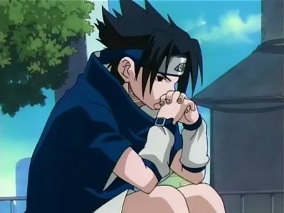
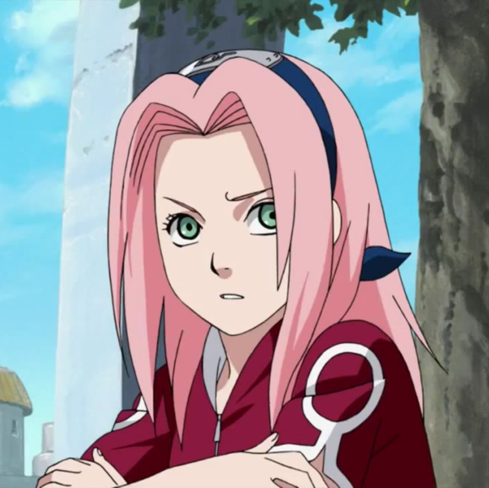
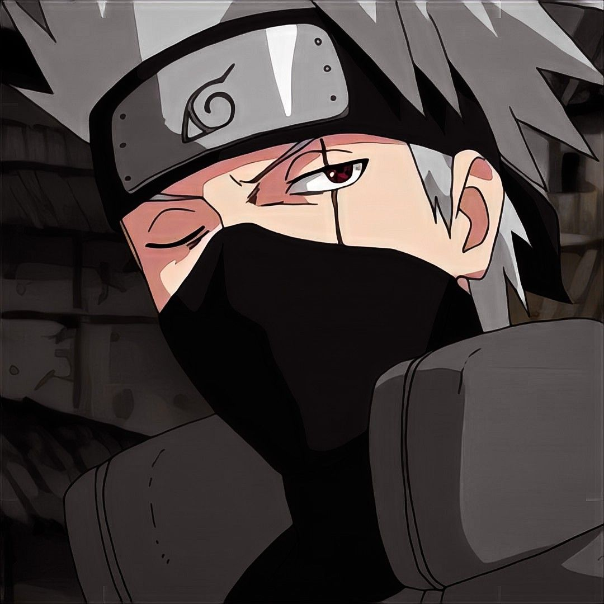

PERSONAJES PRINCIPALES

Uzumaki Naruto
Es el protagonista, un niño huérfano, despreciado por su aldea por tener sellado al zorro demonio en su interior. Su sueño es convertirse en Hokage y que todos los reconozcan.

Uchiha Sasuke
El talento nato. Tiene una venganza pendiente, la cuál es su único objetivo en la vida.

Haruno Sakura
Académicamente inteligente y ambiciosa. Está enamorada de Sasuke.

Hatake Kakashi
Sensei del equipo 7, conocido globalmente como el "ninja copia".

Umino Iruka
Primer sensei de Naruto. Gracias a su intervención en un principio, este no pierde su humanidad.

Hiruzen Sarutobi
Tercer Hokage, abandonó el retiro luego de la tragedia del Cuarto. Es el líder de la aldea.